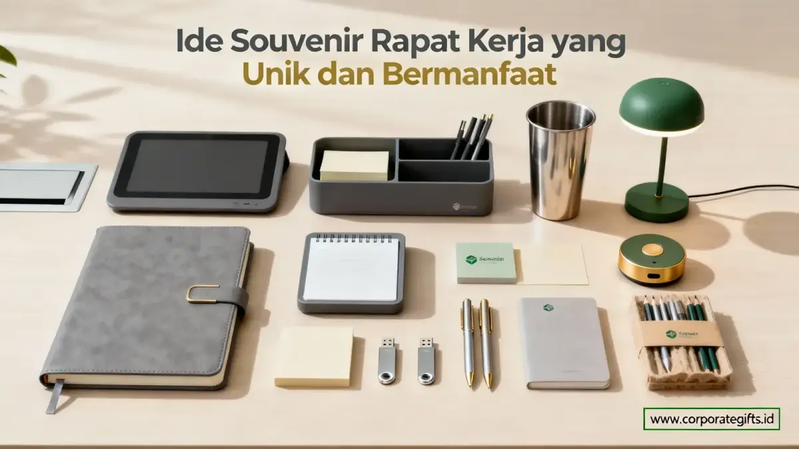

Corporate Gifts ID - Ide souvenir kantor untuk rapat kerja yang unik dan bermanfaat adalah barang yang dipakai setiap hari, seperti notebook custom, tumbler stainless, pulpen metal, tote bag canvas, dan USB flash drive. Souvenir ini efektif karena berguna selama bekerja, memuat logo perusahaan, dan bisa disesuaikan dengan skala rapat serta anggaran yang tersedia.
Souvenir yang tetap terpakai lama setelah rapat selesai memperkuat citra profesional perusahaan sekaligus memberi nilai guna jangka panjang bagi penerimanya. Pemilihan souvenir sebaiknya disesuaikan dengan skala rapat, profil peserta, dan pesan branding yang ingin disampaikan perusahaan.
Poin Kunci Souvenir Rapat Kerja:
- Nilai Pakai Harian: Souvenir kantor paling berkesan adalah yang punya nilai utilitas kerja nyata, bukan sekadar cinderamata seremonial.
- Kombinasi Fungsional: Notebook custom, tumbler stainless, dan USB flash drive termasuk pilihan dengan daya tarik branding yang sangat kuat.
- Efisiensi Anggaran: Paket souvenir yang mengemas beberapa item fungsional terlihat jauh lebih premium sekaligus hemat biaya.
- Konsistensi Identitas: Logo dan warna korporat menjadi faktor penentu agar souvenir memperkuat identitas brand secara berkelanjutan.
- Perencanaan Matang: Pemesanan sejak jauh hari memberi waktu leluasa untuk sampling mockup, proofing logo, dan kontrol kualitas produksi massal.
Kenapa Souvenir Kantor Penting untuk Rapat Kerja?
Souvenir kantor berfungsi sebagai bentuk apresiasi formal sekaligus media komunikasi branding kepada karyawan, klien, atau mitra bisnis.
Rapat kerja biasanya bertepatan dengan evaluasi kinerja, perencanaan program tahunan, atau perayaan pencapaian target. Pemilihan merchandise yang tepat mencerminkan standar profesionalisme perusahaan di mata seluruh pihak yang menerimanya.
Selain itu, souvenir juga memperkuat budaya kerja internal karena karyawan merasa dihargai atas kontribusinya. Perusahaan pun mendapat kesempatan menampilkan identitas visual secara konsisten melalui item yang akan terus digunakan di meja kerja maupun ruang rapat.
Apa Saja Ide Souvenir Kantor untuk Rapat Kerja yang Unik dan Bermanfaat?
Berikut sepuluh ide souvenir kantor yang cocok untuk rapat kerja internal, rapat koordinasi tahunan, maupun agenda strategis lintas departemen:
1. Notebook Custom dengan Desain Perusahaan
Notebook selalu jadi andalan dalam acara formal. Cover khusus dengan emboss logo, tagline perusahaan, dan personalisasi warna mengubah notebook dari alat tulis biasa menjadi souvenir bernilai prestisius.
- Selalu terpakai saat sesi pencatatan notulensi rapat berlangsung.
- Tersedia dalam varian hardcover eksklusif maupun softcover fleksibel.
- Memiliki area branding luas di bagian sampul depan dan sisipan halaman pembuka.
2. Pulpen Metal Eksklusif
Pulpen metal menjadi pilihan klasik untuk souvenir kantor. Kesan elegan dan daya tahan yang awet membuatnya sangat cocok untuk jajaran direksi, tamu kehormatan, hingga seluruh staf peserta rapat.
- Bisa dipersonalisasi dengan laser engraving logo atau nama penerima.
- Terlihat premium dengan rasio biaya pengadaan yang sangat kompetitif.
3. Tumbler Stainless Steel Premium
Tumbler stainless mendukung gaya hidup sehat dan memberi impresi modern. Kategori ini senantiasa menjadi favorit teratas dalam daftar pengadaan souvenir kantor modern.
- Ramah lingkungan dan bisa dipakai berulang kali selama bertahun-tahun.
- Digunakan setiap hari sehingga eksposur brand perusahaan berlangsung terus-menerus.
- Mendukung inisiatif ESG (Environmental, Social, and Governance) dan keberlanjutan korporat.
4. Sticky Notes Organizer
Item ini sangat bermanfaat untuk sesi brainstorming, workshop strategi, dan rapat divisi. Kotak organizer dengan aneka ukuran memo warna-warni memberi kesan kreatif sekaligus rapi di meja kerja.
5. Kalender Meja Minimalis
Kalender meja adalah souvenir evergreen yang terpakai sepanjang tahun. Item ini sangat pas dibagikan saat rapat evaluasi akhir tahun atau sesi kick-off perencanaan kuartal baru.

Pilihan paket merchandise rapat kerja custom logo yang elegan dan tahan lama.
6. Tote Bag Canvas Custom
Tote bag canvas tampil kasual elegan, ramah lingkungan, dan sangat fungsional. Tas ini mampu memuat berkas dokumen rapat, map materi, botol minum, hingga laptop ringan peserta.
7. USB Flash Drive Modern
USB flash drive tetap krusial untuk membagikan berkas digital rapat, SOP perusahaan, atau materi presentasi berukuran besar. Model kartu tipis atau bodi metal finishing matte memberikan kesan mutakhir.
8. Mousepad Custom Anti-Slip
Souvenir sederhana namun berutilitas tinggi ini mempercantik meja kerja sekaligus memperkuat identitas visual kantor. Sangat relevan bagi karyawan operasional maupun peserta rapat hybrid.
9. Paket Alat Tulis Premium dalam Kemasan Eksklusif
Paket gabungan berisi pulpen metal, buku catatan hardcover, dan sticky notes dalam hardbox eksklusif memberikan impresi yang sangat berkelas. Paket ini sempurna untuk klien mitra maupun reward peserta terbaik.
10. Lanyard dan ID Card Holder
Untuk rapat kerja akbar atau konvensi lintas anak perusahaan, lanyard custom sangat praktis sebagai tanda pengenal identitas peserta. Desain cetak full color memastikan logo terlihat jelas di setiap interaksi.
Bagaimana Memilih Souvenir Rapat Kerja Berdasarkan Skala Acara?
Pemilihan souvenir sebaiknya disesuaikan dengan konteks acara agar alokasi anggaran dan dampak branding berjalan optimal. Tabel pemetaan berikut dapat dijadikan acuan praktis bagi tim pengadaan:
| Jenis Rapat Kerja | Rekomendasi Pilihan Souvenir | Karakteristik & Keunggulan |
|---|---|---|
| Rapat Internal Kecil | Notebook custom, pulpen metal grafir | Praktis, langsung terpakai saat rapat divisi, anggaran efisien. |
| Rapat Lintas Departemen | Tumbler stainless SUS304, tote bag canvas | Mendukung kolaborasi kerja harian, ramah lingkungan, visual modern. |
| Rapat Tahunan Skala Besar | Gift set stationery hardbox, lanyard & kartu nama | Kesan formal representatif, seragam untuk seluruh peserta acara. |
| Rapat dengan Klien Eksternal | Executive hampers set, USB flash drive kartu VIP | Mencerminkan apresiasi tinggi dan memperkuat reputasi kemitraan bisnis. |
Apa Manfaat Custom Branding pada Souvenir Kantor?
Custom branding membantu memperkuat ingatan penerima terhadap perusahaan setiap kali mereka menggunakan souvenir tersebut dalam rutinitas kerja sehari-hari.
Konsistensi penempatan logo, pilihan warna korporat yang akurat, serta pesan apresiasi singkat berfungsi layaknya identitas visual resmi pada materi presentasi atau seragam kerja. Semakin konsisten identitas visual yang ditampilkan, semakin kuat pula asosiasi positif dan loyalitas merek yang terbangun di benak penerima.
Bagaimana Tren Souvenir Kantor untuk Rapat Kerja di 2026?
Mengacu pada dinamika industri corporate gifting modern, tren merchandise 2026 semakin mengarah pada item multifungsi dan berkonsep ramah lingkungan, seperti botol minum insulasi suhu tinggi dan tas jinjing kanvas organik.
Perusahaan saat ini cenderung memesan paket merchandise perusahaan yang mengombinasikan beberapa item fungsional dalam satu kemasan terpadu, ketimbang memberikan satu item lepas. Pola bundling ini terbukti jauh lebih efisien dari segi skala biaya produksi sekaligus menghadirkan pengalaman unboxing yang jauh lebih berkesan bagi para peserta rapat.
Pertanyaan Seputar Souvenir Kantor untuk Rapat Kerja (FAQ)
Kesimpulan: Investasi Citra Profesional Lewat Souvenir Rapat Kerja
Souvenir kantor untuk rapat kerja bukan sekadar pelengkap acara seremonial, melainkan investasi strategis yang berdampak nyata pada citra profesional perusahaan secara berkelanjutan.
Kombinasi nilai fungsi nyata, estetika desain, serta konsistensi branding menjadi kunci utama agar souvenir benar-benar memberi makna mendalam bagi setiap penerimanya.
Jelajahi ragam pilihan souvenir dan gift set siap custom logo di katalog resmi CorporateGifts.ID, dan temukan paket yang paling selaras dengan kebutuhan rapat kerja perusahaan Anda.

Ditulis oleh: Arinda Zakia
Senior Corporate Gifting SpecialistSpesialis kurasi merchandise dan souvenir korporat di CorporateGifts.ID. Berpengalaman lebih dari 7 tahun dalam menyusun paket corporate gift fungsional untuk instansi BUMN, kementerian, perbankan, dan perusahaan multinasional.
Lihat Profil Lengkap & Panduan Lainnya